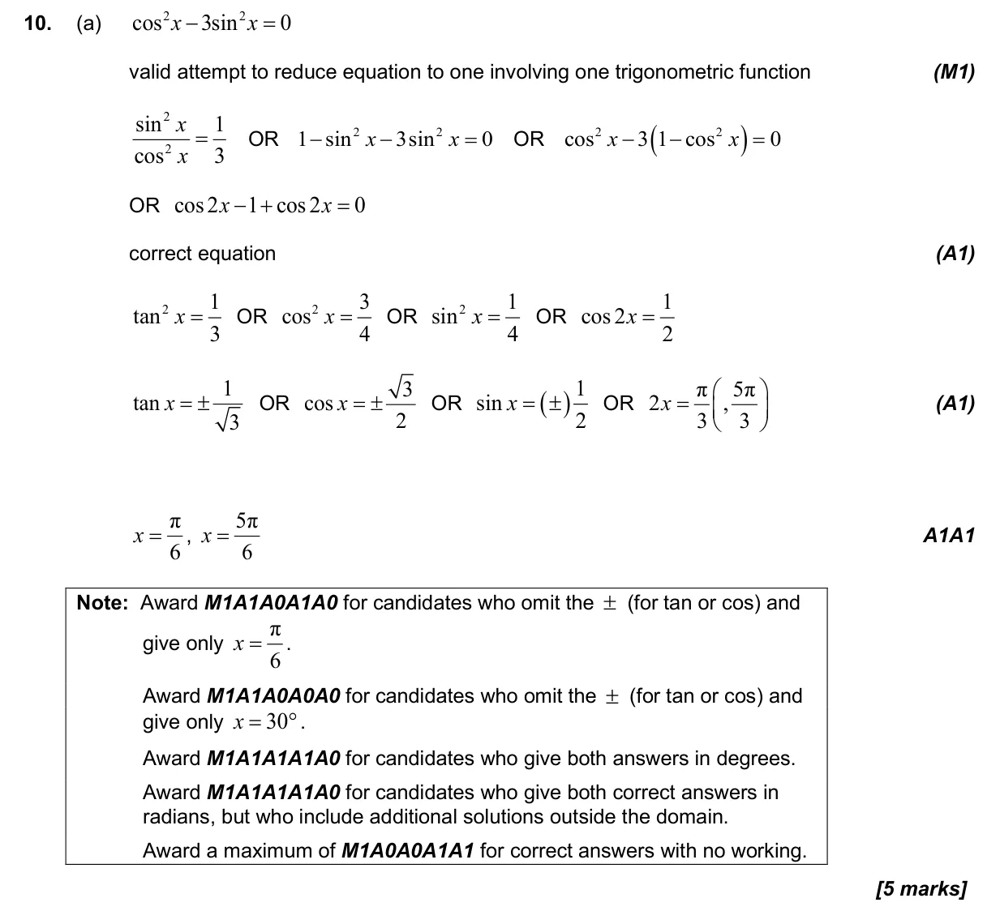
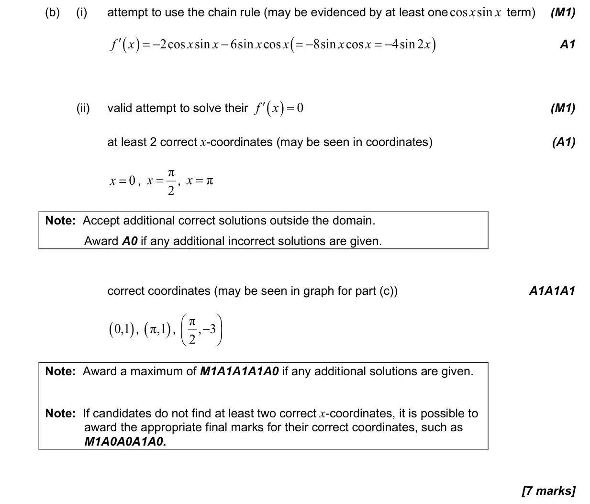
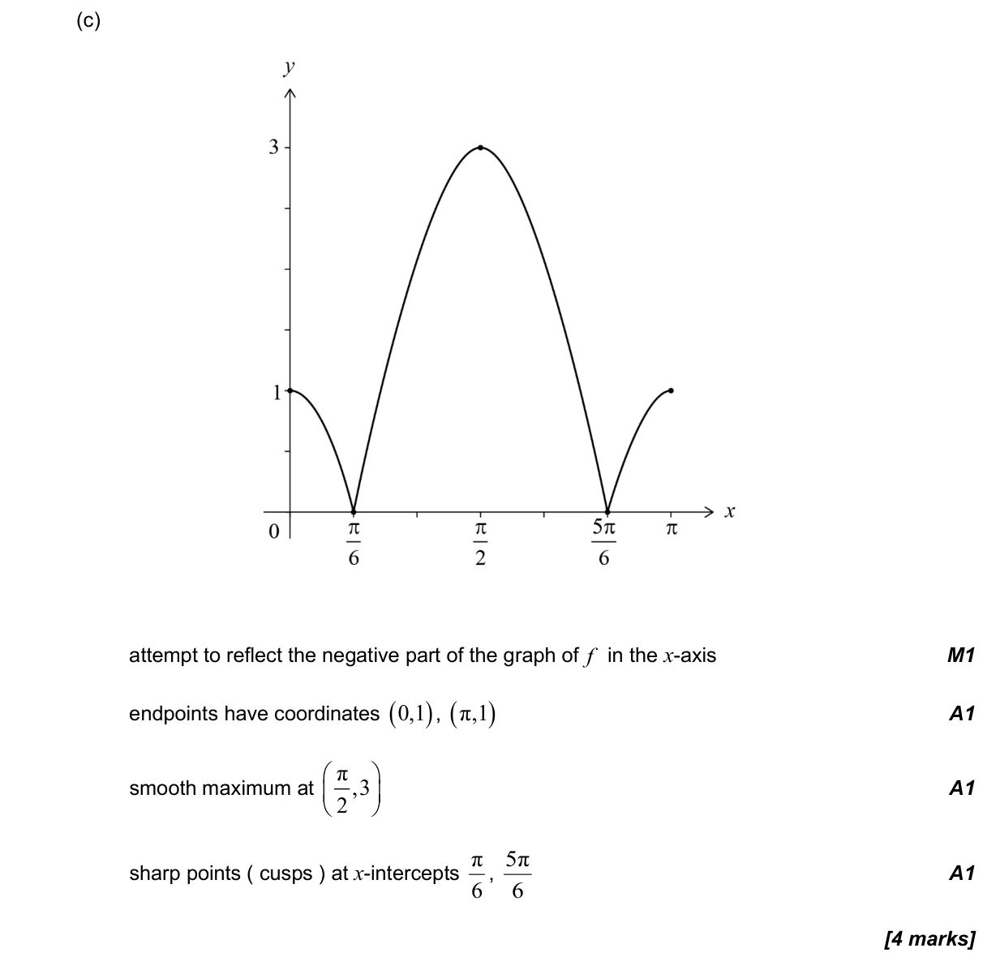
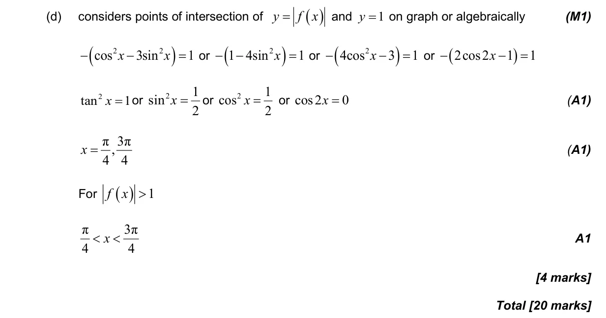

20 marks P1 TZ0 Section B No calculator 3.8 Solving trigonometric equations2.16 Graphs of |f(x)|, f(|x|), 1/f(x), f(ax + b) and [f(x)]²; modulus equations and inequalities5.8 Optimization, local extrema and points of inflexion5.6 Differentiating polynomials n in Q, chain, product and quotient rules3.6 Pythagorean identity and double angles3.7 Circular functions: graphs, composites and transformations Question Hide breakdown abcd Markscheme 